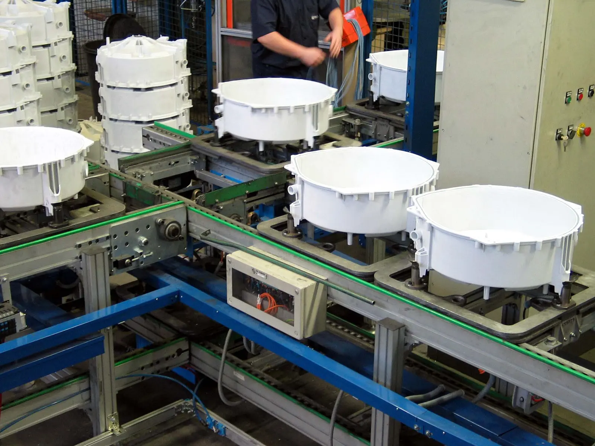

One document in.
Four products out.
Generating the itenium-ui API client from Forge's OpenAPI document.
The .NET spec enters at the intake; typed hooks, query keys, MSW handlers and Zod
schemas come off the end of the line.
Orval, client: 'react-query'
It is the only generator that emits typed hooks, query-key factories, MSW handlers and Zod schemas from a single config [5] — and MSW + TDD is exactly the Jest/Testing-Library setup itenium-ui already has.
Hey API ⭐ 5.1k is the runner-up and the better
architectural fit — it emits framework-agnostic queryOptions/mutationOptions
instead of hooks [7]. Take it if you dislike one-hook-per-endpoint.
Do not build on openapi-fetch/openapi-react-query: their maintainer put them in
maintenance mode for 2026 [2].
And the big-picture point: once the client and its query hooks are generated, "which state manager" shrinks to "which 200-line client-state store".
Intake — what enters the line
forge.jsonThe raw material is the OpenAPI document Forge produces. Two producers are available, and the choice of producer is not coupled to the choice of generator — Orval consumes both. What the producer choice changes is when you migrate.
The document
Point input.target at the on-disk forge.json emitted by dotnet build
via Microsoft.Extensions.ApiDescription.Server [10].
CI never has to boot the API to regenerate the client. That is the single biggest CI ergonomics win available here.
Swashbuckle
Dropped from the .NET template but not deprecated; v10 supports .NET 10 [22].
Forge's AddForgeSwagger() is fine.
Emits oneOf + a real discriminator for polymorphic DTOs — which is the whole ballgame (see Gate 04).
Quality-control gates — the .NET quirks
inbound material inspection · 6 gates
Every gate inspects one thing the .NET side does to the document, and reports what it costs downstream.
Two of them cannot be fixed in the generator config — they are orders for the backend.
Clear those first; everything else is a flag in orval.config.ts.
System.Text.Json casingSchema property names are already camelCase; the doc reflects JsonNamingPolicy [11].
Non-issue. No namingConvention gymnastics needed. ⚠ MVC AddJsonOptions naming policies are not read by the built-in generator — it reads Http.Json.JsonOptions.
No converter → type: integer [11].
With JsonStringEnumConverter → string enum values (⚠ and even then .NET has emitted them without a type [12]).
Then Orval's override.enumGenerationType: 'enum' | 'const' [6]
gives real names instead of 0 | 1 | 2.
DateTimetype: string, format: date-time.
Orval override.useDates: true converts to real Date objects [5].
[JsonPolymorphic] / [JsonDerivedType]
Swashbuckle emits oneOf + discriminator. The built-in .NET generator emits
anyOf with renamed derived schemas and no discriminator object — open, backlogged [9].
ProblemDetails
Only lands as a schema if responses are annotated (ProducesResponseType / TypedResults) [11];
Swashbuckle has misses here [28].
Orval's custom mutator exports an ErrorType alias that overrides the error type of every generated hook [18]
→ one line makes error a ProblemDetails everywhere.
OpenAPI 3.0 nullable: true. .NET 10 emits 3.1 by default [10],
where nullability is type: [string, 'null'].
Work orders for the backend — clear before the line runs
- Add
JsonStringEnumConverteron the Forge side. Without it every enum arrives astype: integerand no generator can name your values. - Stay on Swashbuckle. The missing
discriminatorin .NET 10's built-in generator is what blocks migration — not the generator you pick on the frontend. If Forge has (or wants)[JsonPolymorphic]DTOs, hold, or write a document transformer to re-add the discriminator. - Annotate error responses (
ProducesResponseType/TypedResults) soProblemDetailsactually lands as a schema for the mutator to bind to.
Machine selection panel
four output ports · lamp lit = the machine emits itThe only question that matters for a React frontend: which output ports does the machine actually have? Everything a generator does not emit, you hand-write. Read the lamps.
binding
keys
mocks
Valibot
hooks: true emits useQuery/useMutation [16]; tag invalidation, not keys. No MSW, no Zod.openapi-react-query is a 1 kB runtime wrapper — no codegen, no per-op hooks or keys [24]"openapi-fetch, openapi-react-query, and openapi-metadata will be put into maintenance mode and won't get future updates, so we can put 100% of efforts back into openapi-typescript." [2]
openapi-fetch + openapi-react-query was the fashionable 2025 answer. They still work — but
building a greenfield data layer on a package that is explicitly frozen is a bad trade, especially when the
alternatives are more capable, not less.
openapi-typescript itself (types only) remains excellent and is worth keeping in mind as the floor.
The other 2026 shift: from hooks to options objects
The ecosystem is moving from generated hooks to generated options objects — queryOptions()
you pass to useQuery yourself [1]. Hey API does this [7];
Orval still generates one useXxx hook per path [4]. Options objects compose better (suspense, prefetch,
useQueries) and are framework-agnostic. This is Orval's one genuine architectural weakness, and it is the
only reason to pick Hey API instead.
The line
4 stations · 4 output bins
Intake
forge.json on disk, dropped by dotnet build. No API boot required.
Transform
input.override.transformer mutates the document before validation [23] — the right place to force a discriminator or rename an operationId without forking Forge.
Generate
client: 'react-query', mode: 'tags-split'. One config, four outputs.
Typed hooks
useXxx() per op
Query keys
getXxxQueryKey()
MSW handlers
+ Faker data
Zod schemas
*.zod.ts
The machine program
two entries: client + hooks + mocks, and ZodAll options below are from Orval's own reference [5] [23] [6].
import { defineConfig } from 'orval'; const spec = './openapi/forge.json'; // emitted by `dotnet build` (Microsoft.Extensions.ApiDescription.Server) export default defineConfig({ forge: { input: { target: spec, override: { // Patch .NET quirks before validation: e.g. re-add the polymorphic discriminator. transformer: './tools/orval/forge-transformer.ts', }, }, output: { mode: 'tags-split', target: 'libs/api/src/generated/forge.ts', schemas: 'libs/api/src/generated/model', client: 'react-query', httpClient: 'fetch', clean: true, formatter: 'prettier', baseUrl: { runtime: 'import.meta.env.VITE_API_URL' }, mock: { generators: [ { type: 'msw', delay: 0, baseUrl: '/api' }, { type: 'faker', schemas: true }, ], }, override: { mutator: { path: './libs/api/src/http/forge-fetch.ts', name: 'forgeFetch', }, useDates: true, // DateTime -> Date enumGenerationType: 'enum', // replaces v7's useNativeEnums query: { useQuery: true, useMutation: true, signal: true, }, operations: { // ForgePagedResult endpoints -> infinite queries, keyed on ForgePageQuery.page listDocuments: { query: { useInfinite: true, useInfiniteQueryParam: 'page' }, }, }, }, }, }, forgeZod: { input: { target: spec }, output: { mode: 'tags-split', target: 'libs/api/src/generated/zod', client: 'zod', fileExtension: '.zod.ts', formatter: 'prettier', }, }, });
import type { ProblemDetails } from '../generated/model'; export const forgeFetch = async <T>( url: string, init: RequestInit & { params?: Record<string, unknown> }, ): Promise<T> => { const res = await fetch(`${import.meta.env.VITE_API_URL}${url}`, { ...init, headers: { 'Content-Type': 'application/json', ...init.headers }, credentials: 'include', // JWT via httpOnly cookie; swap for an Authorization header if Keycloak returns a bearer }); if (!res.ok) throw (await res.json()) as ProblemDetails; // RFC 7807, guaranteed by Forge return res.status === 204 ? (undefined as T) : ((await res.json()) as T); }; // Orval reads these aliases to type the hooks' TError / TBody. export type ErrorType<_ = unknown> = ProblemDetails; export type BodyType<T> = T;
{
"targets": {
"api-codegen": {
"executor": "nx:run-commands",
"options": { "command": "bunx orval --config orval.config.ts" },
"inputs": ["{workspaceRoot}/openapi/forge.json", "{workspaceRoot}/orval.config.ts"],
"outputs": ["{projectRoot}/src/generated"],
"cache": true
},
"build": { "dependsOn": ["api-codegen"] },
"test": { "dependsOn": ["api-codegen"] }
}
}
nx run api:api-codegen --skip-nx-cache git diff --exit-code libs/api/src/generated
Watch
orval --watch regenerates on spec change. Better: point input.target at the on-disk forge.json and let the file watcher do the rest.
CI drift
Run codegen, fail on a dirty tree. Commit the generated code — don't .gitignore it. That is the whole point of owning both sides.
Nx cache
Declare inputs: [spec] and outputs: [generated dir]; Nx restores the output instead of re-running it [21].
Escape hatch
input.override.transformer patches the document pre-validation [23] — repair .NET quirks without forking Forge.
What comes off the end of the line
and what's left for a "state manager"The contract is the source of truth. The state library is an implementation detail.
Generate the client and you have already generated: the request functions, the response types, the query keys, the mutations, and the MSW handlers your tests mock against. What is left for a "state manager" is: which tab is open, is the sidebar collapsed, what's in the form before submit, the selected rows in a grid.
"the truly globally accessible client state that is left over after migrating all of your async code to TanStack Query is usually very tiny" [17]
Practitioners in 2026 phrase the failure mode as: the mistake codebases make is treating server state like client state — dumping API responses into Redux and hand-tracking loading flags [1].
✕ Redux Toolkit here
Means choosing RTK Query (its codegen does emit hooks [16]), then paying for a store, slices and a tag-invalidation model to solve a problem TanStack Query solves with a query key. RTK's codegen is also strictly weaker: no MSW, no Zod, no query-key factory.
✓ TanStack Query + Orval
The "state management library" line item in package.json is
TanStack Query ⭐ 50k —
plus whatever tiny thing you use for UI state (useState first; a 1-file Zustand store when you
actually need cross-tree UI state).
The decision that does still matter is runtime validation at the boundary — generate Zod from
the same spec [29] and reuse those schemas as
react-hook-form resolvers so the form rules and the API contract cannot drift.
And tests get the MSW handlers for free — getListDocumentsMockHandler() and friends land next to the hooks
[5], so a Testing-Library test mocks the
contract, not fetch. That is the TDD payoff, and it is the reason Orval beats Hey API for this specific repo.
Parts manifest
30 sourcesAdjacent lines on the plant floor
The React state stack for Itenium.Forge in 2026: the Redux question dissolves
Six angles independently converge: don't introduce Redux — generate the client from Forge's OpenAPI, let TanStack Query own server state, let the router own filter state, and leave one small Zustand store for what remains.
Is Redux still the right answer for a new React 19 app in 2026?
Redux is healthy but no longer the default: TanStack Query plus a small Zustand store wins.
Server-state layer: TanStack Query wins
Register.defaultError makes ProblemDetails a first-class typed error with no per-call generics.
Client state after the query cache
The residual client state in a CRUD admin is roughly one persisted preferences store — take Zustand.
The router is a state manager
TanStack Router makes filters/sort/pagination typed URL state instead of Redux slices.
Auth & session state on Forge
Kill the localStorage JWT plan: in-memory access token, capabilities from /me.
Read the default view
The full write-up this line was built from — prose, tables, all 30 citations inline.